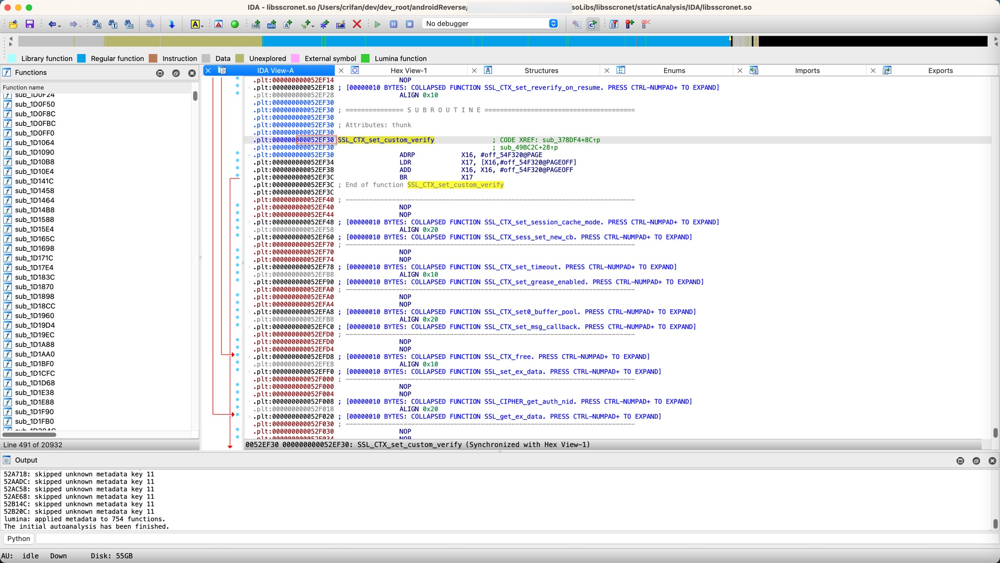
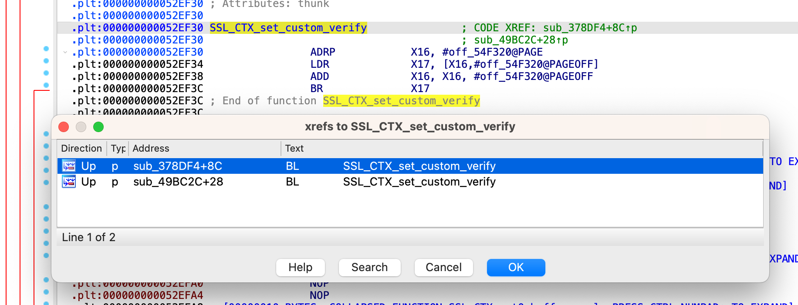
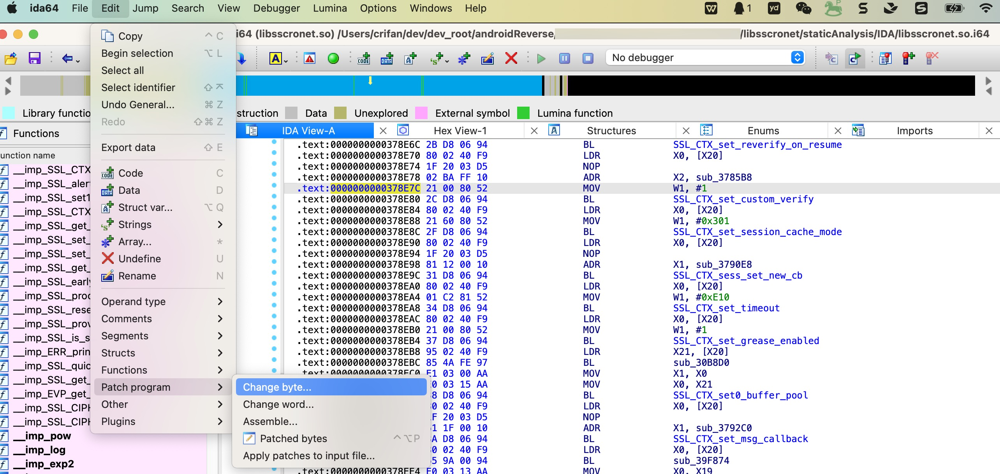
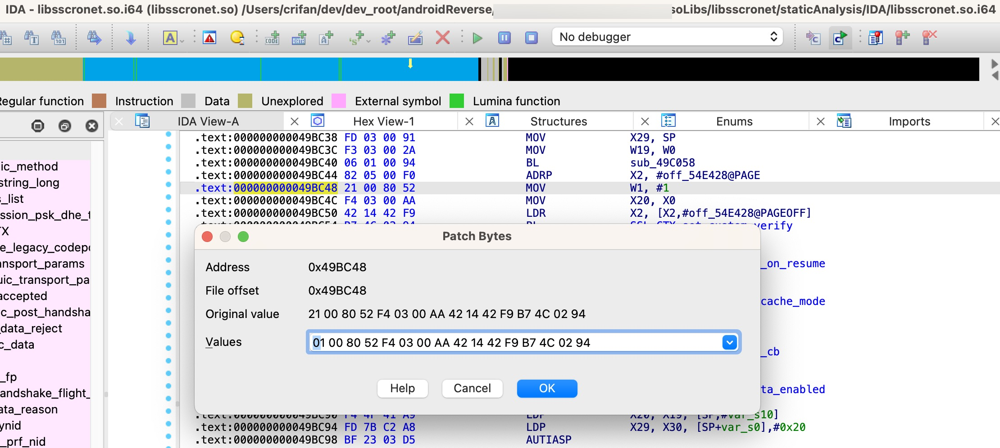
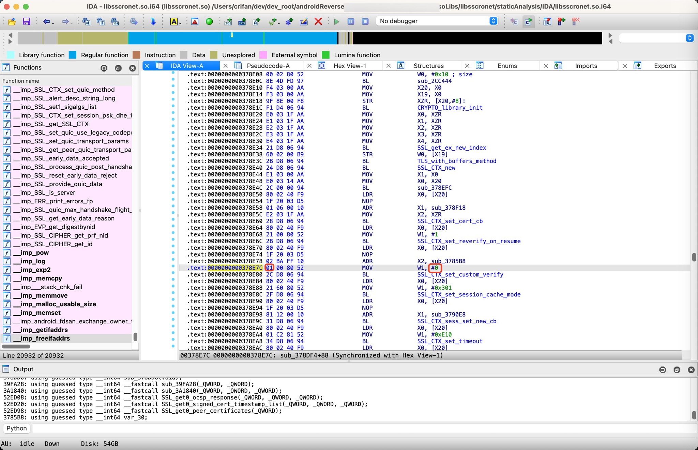
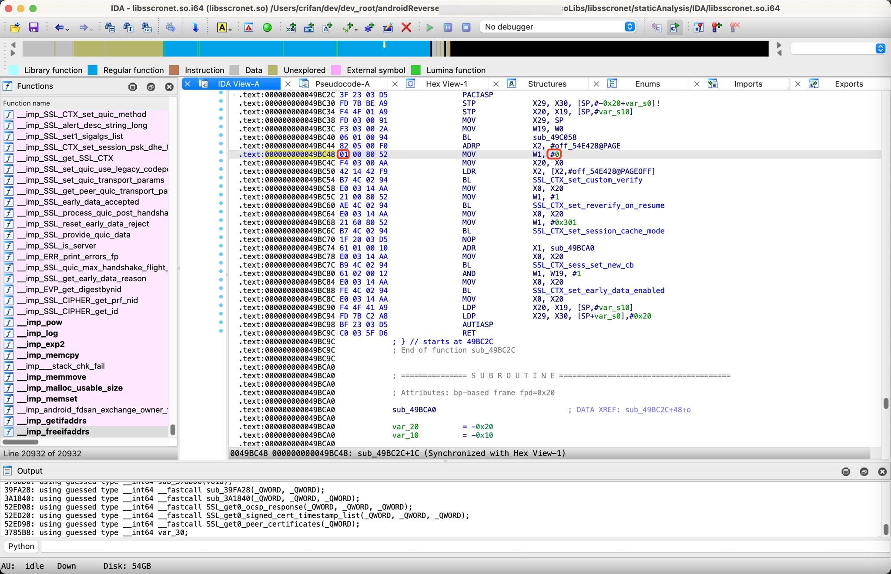
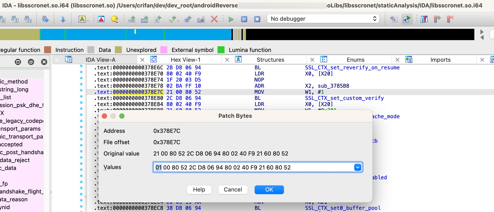

修改并替换libsscronet.so库文件的方式
此处，要去给抖音的libsscronet.so去patch打补丁 == 修改并替换libsscronet.so的so库文件的方式：
实现绕过证书校验，实现反反抓包的效果：
修改libsscronet.so的so库文件
要patch的点=具体位置：
先是从函数SSL_CTX_set_custom_verify的调用的地方：
通过IDA，可以找到函数SSL_CTX_set_custom_verify的实际二进制内偏移地址是：0x52EF30

通过：
SSL_CTX_set_custom_verify == 0x52EF30
找到2处引用：

->
sub_378DF4 + 8C.text:0000000000378E7C MOV W1, #1
sub_49BC2C + 28.text:000000000049BC48 MOV W1, #1
加上opcode后显示为：
sub_378DF4.text:0000000000378E7C 21 00 80 52 MOV W1, #1- 
sub_49BC2C.text:000000000049BC48 21 00 80 52 MOV W1, #1- 
根据之前的hook思路，就是：
让传递给SSL_CTX_set_custom_verify的参数中mode参数的值从1改为0，而mode参数值，是保存在W1中的，所以就是去：
把W1的值(从之前的1)改为0
分别去改为：
sub_378DF4.text:0000000000378E7C 01 00 80 52 MOV W1, #0- 
sub_49BC2C.text:000000000049BC48 01 00 80 52 MOV W1, #0- 
替换libsscronet.so的so库文件
本身手动即可去替换修改后的so库文件，到安卓手机中已安装的app的相关路径下面的旧的so库文件
不过为了简化，目前已写成搅脚本自动化操作：
/Users/crifan/dev/dev_root/androidReverse/xxx/Douyin/dy297/Douyin/dy297/libsscronet_so/autoReplaceSo/autoReplaceSo.sh
#!/bin/bash
# Function: Script to auto replace Douyin libsscronet.so
# Author: Crifan Li
# Update: 20240923
# SEPERATOR="--------------------"
SEPERATOR="===================="
function log() {
echo "${SEPERATOR} $1 ${SEPERATOR}"
}
LIBSSCRONET_SO="libsscronet.so"
echo "LIBSSCRONET_SO=${LIBSSCRONET_SO}"
SO_NEW_PATH_PC="/Users/crifan/dev/dev_root/androidReverse/xxx/Douyin/dy297/Douyin/dy297/libsscronet_so/input/libsscronet_yyy.so"
# SO_NEW_PATH_PC="/Users/crifan/dev/dev_root/androidReverse/xxx/Douyin/dy297/Douyin/dy297/libsscronet_so/input/libsscronet_crifan.so"
# SO_NEW_PATH_PC="/Users/crifan/dev/dev_root/androidReverse/xxx/Douyin/dy313/input/libsscronet/libsscronet_yyy.so"
echo "SO_NEW_PATH_PC=${SO_NEW_PATH_PC}"
SO_TEMP_DOWNLOAD_FOLDER="/sdcard/Download/"
echo "SO_TEMP_DOWNLOAD_FOLDER=${SO_TEMP_DOWNLOAD_FOLDER}"
SO_TEMP_DOWNLOAD_PATH="${SO_TEMP_DOWNLOAD_FOLDER}/${LIBSSCRONET_SO}"
echo "SO_TEMP_DOWNLOAD_PATH=${SO_TEMP_DOWNLOAD_PATH}"
# echo "${SEPERATOR} Download ${LIBSSCRONET_SO} into android ${SEPERATOR}"
log "Download ${LIBSSCRONET_SO} into android"
adb push ${SO_NEW_PATH_PC} ${SO_TEMP_DOWNLOAD_FOLDER}/${LIBSSCRONET_SO}
# echo "${SEPERATOR} Find ${LIBSSCRONET_SO} location ${SEPERATOR}"
log "Find ${LIBSSCRONET_SO} location"
# LIBSSCRONET_SO_ROOT_FOLDER="/data/app"
LIBSSCRONET_SO_ROOT_FOLDER="/data/data" # /data/data/com.ss.android.ugc.aweme/app_librarian/29.7.0.6746496378/libsscronet.so
SO_FILE_ANDROID=$(adb shell find ${LIBSSCRONET_SO_ROOT_FOLDER} -name ${LIBSSCRONET_SO})
echo "SO_FILE_ANDROID=${SO_FILE_ANDROID}"
# echo "${SEPERATOR} Extract ${LIBSSCRONET_SO} folder path ${SEPERATOR}"
log "Extract ${LIBSSCRONET_SO} folder path"
# SO_FOLDER_ANDROID=${SO_FILE_ANDROID#libsscronet}
# SO_FOLDER_ANDROID=${SO_FILE_ANDROID##libsscronet}
# SO_FOLDER_ANDROID=${${SO_FILE_ANDROID}#libsscronet.so}
SO_PATH_LEN=${#SO_FILE_ANDROID}
echo "SO_PATH_LEN=${SO_PATH_LEN}"
SO_FILE_LEN=${#LIBSSCRONET_SO}
echo "SO_FILE_LEN=${SO_FILE_LEN}"
SO_FOFER_LEN=$((${SO_PATH_LEN}-${SO_FILE_LEN}))
echo "SO_FOFER_LEN=${SO_FOFER_LEN}"
# SO_FOLDER_ANDROID=${SO_FILE_ANDROID##libsscronet}
# SO_FOLDER_ANDROID=${SO_FILE_ANDROID%libsscronet}
# SO_FOLDER_ANDROID=${SO_FILE_ANDROID:96}
# SO_FOLDER_ANDROID=${SO_FILE_ANDROID:0:97}
SO_FOLDER_ANDROID=${SO_FILE_ANDROID:0:${SO_FOFER_LEN}}
echo "SO_FOLDER_ANDROID=${SO_FOLDER_ANDROID}"
# echo "${SEPERATOR} Into adb shell ${SEPERATOR}"
log "Into adb shell"
adb shell <<EOF
uname -a
ls -lh ${SO_TEMP_DOWNLOAD_FOLDER} | grep ${LIBSSCRONET_SO}
# cd /data/app
# pwd
# find . -name libsscronet.so
# SO_FILE_ANDROID=$(find . -name libsscronet.so)
# echo "SO_FILE_ANDROID=${SO_FILE_ANDROID}"
cd ${SO_FOLDER_ANDROID}
# echo "${SEPERATOR} Into ${SO_FOLDER_ANDROID} ${SEPERATOR}"
log "Into ${SO_FOLDER_ANDROID}"
pwd
# echo "${SEPERATOR} Remove ${LIBSSCRONET_SO} ${SEPERATOR}"
log "Remove ${LIBSSCRONET_SO}"
ls -lh | grep ${LIBSSCRONET_SO}
rm -f ${LIBSSCRONET_SO}
ls -lh | grep ${LIBSSCRONET_SO}
# echo "${SEPERATOR} Move ${LIBSSCRONET_SO} to here ${SEPERATOR}"
log "Move ${LIBSSCRONET_SO} to here"
mv ${SO_TEMP_DOWNLOAD_PATH} ${SO_FOLDER_ANDROID}
ls -lh | grep ${LIBSSCRONET_SO}
# echo "${SEPERATOR} Change permission for ${LIBSSCRONET_SO} ${SEPERATOR}"
log "Change permission for ${LIBSSCRONET_SO}"
chmod 755 ${LIBSSCRONET_SO}
chown system ${LIBSSCRONET_SO}
chgrp system ${LIBSSCRONET_SO}
ls -lh | grep ${LIBSSCRONET_SO}
EOF
之前某次的运行效果：
➜ libsscronet_so autoReplaceSo/autoReplaceSo.sh
LIBSSCRONET_SO=libsscronet.so
SO_NEW_PATH_PC=/Users/crifan/dev/dev_root/androidReverse/xxx/DouYin/dy297/libsscronet_so/input/libsscronet_crifan.so
SO_TEMP_DOWNLOAD_FOLDER=/sdcard/Download/
SO_TEMP_DOWNLOAD_PATH=/sdcard/Download//libsscronet.so
==================== Download libsscronet.so into android ====================
/Users/crifan/dev/dev_root/androidReverse/xxx/...: 1 file pushed, 0 skipped. 97.4 MB/s (5567544 bytes in 0.055s)
==================== Find libsscronet.so location ====================
SO_FILE_ANDROID=/data/app/~~cJq-AFnKyZwZZqpRJY9hWA==/com.ss.android.ugc.aweme-1LCghzY2HKvNbI0WF3vccQ==/lib/arm64/libsscronet.so
==================== Extract libsscronet.so folder path ====================
SO_PATH_LEN=111
SO_FILE_LEN=14
SO_FOFER_LEN=97
SO_FOLDER_ANDROID=/data/app/~~cJq-AFnKyZwZZqpRJY9hWA==/com.ss.android.ugc.aweme-1LCghzY2HKvNbI0WF3vccQ==/lib/arm64/
==================== Into adb shell ====================
Linux localhost 4.19.269 #1 SMP PREEMPT Sat Jul 27 21:05:42 CST 2024 aarch64 Toybox
-rw-rw---- 1 u0_a216 media_rw 5.3M 2024-08-28 09:41 libsscronet.so
/data/app/~~cJq-AFnKyZwZZqpRJY9hWA==/com.ss.android.ugc.aweme-1LCghzY2HKvNbI0WF3vccQ==/lib/arm64
-rwxr-xr-x 1 system system 5.3M 2024-04-22 22:06 libsscronet.so
-rw-rw---- 1 u0_a216 media_rw 5.3M 2024-08-28 09:41 libsscronet.so
-rwxr-xr-x 1 system system 5.3M 2024-08-28 09:41 libsscronet.so
替换so后，重启抖音，抖音即可正常访问网络：
正常抓包了。
附录
如何确定要修改的值的逻辑 = 应该修改二进制指令为何值？
此处是要修改函数SSL_CTX_set_custom_verify的参数，此处是第二个参数=mode参数=存放在W1中的值：从1变成0
MOV W1, #1
改为：
MOV W1, #0
如何把要改的指令生成对应的Opcode操作码？
而已知要去把：
MOV W1, #0
的改动写入到so库文件中，但是对应的opcode操作码的值是什么，此时并不知道
所以可以借助于
中的：
Online ARM to HEX Converter (armconverter.com)
去生成此处的，ARM64的二级制的汇编指令码
从而才能搞懂：
原始的字节码 -》 对应的汇编代码含义
以及，要修改成什么汇编代码 -》 所对应的新的字节码是多少
举例：
之前的汇编代码是：
MOV W1, #1
对应着：
ARM64的字节码是：
21008052
而要改为：
MOV W1, #0
对应的ARM64字节码是：
01008052
》所以我们最终要改的数据就是：
- 从：
21 00 80 52 - 改为：
01 00 80 52
-》对应到IDA中就是
0x378E7COrigin value21 00 80 52 2C D8 06 94 80 02 40 F9 21 60 80 52- 注：后续有更多的二进制字节码，不用管，保持原始值即可
2C D8 06 94 80 02 40 F9 21 60 80 52- 且后续注意到：是后续其他3行汇编代码对应的汇编指令
.text:0000000000378E80 2C D8 06 94 BL SSL_CTX_set_custom_verify .text:0000000000378E84 80 02 40 F9 LDR X0, [X20] .text:0000000000378E88 21 60 80 52 MOV W1, #0x301
- 且后续注意到：是后续其他3行汇编代码对应的汇编指令
- 注：后续有更多的二进制字节码，不用管，保持原始值即可
Values01 00 80 52 2C D8 06 94 80 02 40 F9 21 60 80 52- 
IDA中如何修改二进制=打补丁=patch
- 概述
- IDA->Edit-》Patch program-》Change byte-》修改数据-》OK
- IDA->Edit-》Patch program-》Apply patches to input file-》OK
- 详解